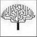
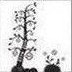

Выберите картинку, которая вам нравится больше всего.
- 
- 
1. Вы жестокий.
Вы достаточно жестоки, но при этом и осторожны. Вашими поступками всегда руководит совесть. В случае самообороны, Вы, пожалуй, сможете убить, чтобы защитить себя.2. Вы безжалостный.
Вы действительно безжалостны. Вас не мучают сомнения совести. Вы сделаете практически все, чтобы претворить в жизнь свои желания. Правильнее будет сказать, что обычно личное и финансовое благополучие для Вас важнее благополучия и здоровья других людей. Вы способны на убийство.3. Вы безобидный.
В вашем случае все просто - вы не способны на убийство. Разве что по неосторожности.4. Вы разумный.
Вы обладаете высоким интеллектом. Интеллектуальный уровень некоторых представителей вашего типа может достигать 145 пунктов IQ, что признается порогом гениальности (интеллект одного из серийных убийц, Эдмунда Кемпера, признан равным 150 пунктам IQ, сейчас он весьма успешно работает в сотрудничестве с полицией и помогает им в вычислении преступников). Вы можете убить человека, но только в состоянии аффекта.5. Вы гуманный.
Вас нельзя считать жестоким. Ваше отношение к жизни определяется порядочностью и гуманными принципами. На убийство Вы, в принципе, не способны.6. Вы садист.
Вы можете Совершить преступление для получения удовольствия. Убийство может стать способом удовлетворения ваших нужд, вы видите жертву как объект, необходимый для того, чтобы доставить наслаждение.7. Вы жадный.
Материальная и личная выгода являются основными мотивами убийства для вас. В основном ваш тип состоит из женщин, причем убивают они преимущественно с помощью яда или же сильнодействующих препаратов, которые в больших дозах вызывают смерть. Однако среди таких преступников довольно часто встречаются и мужчины, которые для убийств могут использовать другие способы.